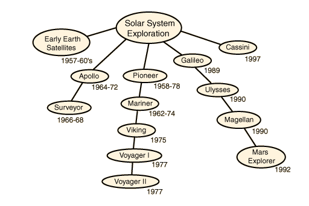

Studies of the Sun have
been carried out by:
Ulysses
SOHO
Cosmic background
radiation:
COBE
WMAP
Russian Venera probes
Russian Luna
Hipparcos
NASA Current Missions
Index
Solar System Concepts
HyperPhysics
**********
Astrophysics
R Nave
Go Back